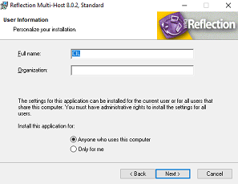

Subsecretaria de Economia
Gestión de Recursos
Procuradores Municipales
Legal Tributaria
CIL-Hacienda
Enlaces importantes
Correo webmail MR
Nomina de escribano
Cups Munix II
Administracion Munix III
Clientes conectados en Munix III
Nueva plataforma soporte 1ero y 2do nivel
Clave Unificada
Servicios TI
Cuota de Correo
Telefonos
Telefonos utiles
Internos Informaticas
Telefonos
Sistema De Notas
Informatica
Convocatoria pasantias
Inventario CIL
Sistema inventario
Guia de instalacion de SPI con reflection
Reflection es un programa de acceso remoto a una terminal de impresora o de PC, el cual usaremos para acceder al Sistema Provincial de Impuestos (SPI). Se puede instalar en los sistemas operativos Linux o Windows.
Instalación de SPI con reflection en windows para PC:
- Instalar programa reflection. Este se encuentra en el server (\\192.168.97.205\soft\cil\- Municipal\aplicativos\Refleccion\reflection8)
- Una vez instalado, abrimos el programa INSTALL, preferiblemente ejecutar como administrador.
- Luego clickeamos en install, luego continue installation.
- Seleccionamos Workstation Installation
- Ingresamos informacion del usuario, por defecto podemos poner CIL en full name, y dejar lo demás vacío. 
- En tipo de instalación, seleccionamos instalación tipica.
- Luego, seguimos con la instalación, seleccionando next en las ventanas que aparecen.
- Una vez terminada la instalación, abrimos el programa, que aparece como "Host - AS400"
- Una vez allí, nos aparecerá una ventana, a la cual le damos en cancel
- Luego vamos a Connection, Session Setup...
-
Ponemos las opciones tal cual muestra la imágen.
En Type ingresamos IBM 3270 Terminal.
ModelID: Model2 24x80 Extended.
Type: Telnet.
Host name or IP adress: 10.1.4.11.
Port: 23.
Y en device name debemos ingresar el nombre de la Romu, ésta la asigna la dirección general de informática. - Le damos en Save As... y guardamos en el lugar que querramos.